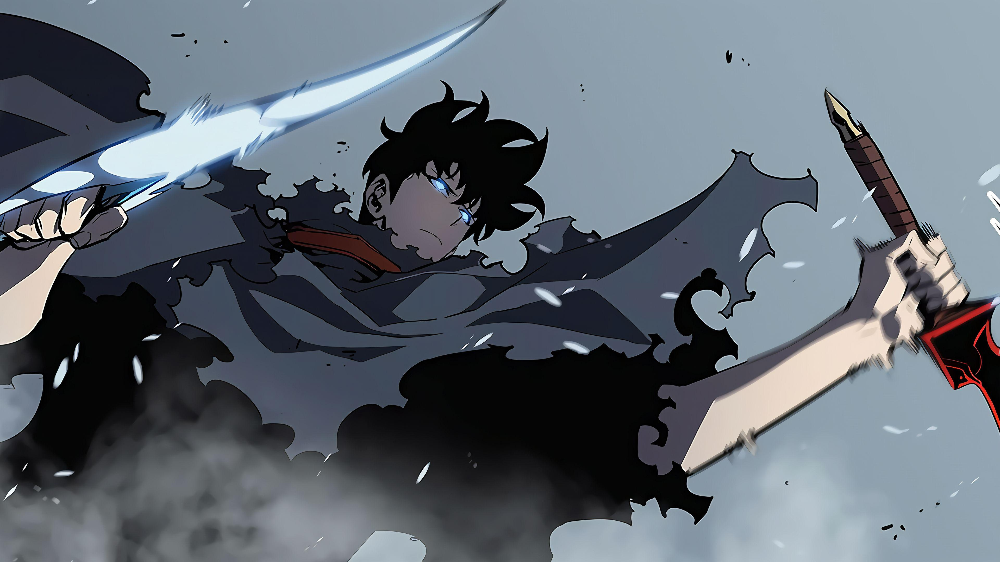
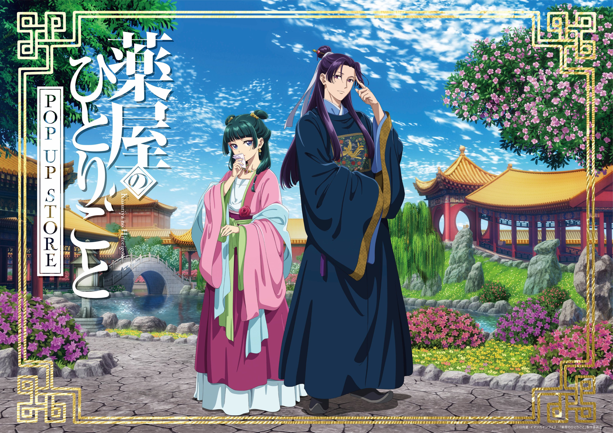

TRENDING
ONE PIECE
Action-Adventure-Fantasy

1123 Episodes | Ongoing
Barely surviving in a barrel after passing through a terrible whirlpool at sea, carefree Monkey D. Luffy ends up aboard a ship under attack by fearsome pirates. Despite being a naive-looking teenager, he is not to be underestimated. Unmatched in battle, Luffy is a pirate himself who resolutely pursues the coveted One Piece treasure and the King of the Pirates title that comes with it.
Fire Force
Action-Fantasy-Sci-Fi
Season 1 : 24 Episodes | Season 2: 24 Episodes | Season 3: Ongoing
Spontaneous Human Combustion: a chaotic phenomenon that has plagued humanity for years, randomly transforming ordinary people into flaming, violent creatures known as Infernals. While Infernals make up the first-generation accounts of Human Combustion, the second and third generations became known as pyrokinetics—people gifted with the ability to manipulate and control their flames while remaining human. To combat the Infernal threat and discover the cause, the Tokyo Armed Forces, Fire Defense Agency, and Holy Church of Sol produced their answer: the Special Fire Force.
SOLO LEVELING
Action-Adventure-Fantasy

Season 1 : 12 Episodes | Season 2: 13 Episodes
Sung Jin-Woo is an E-rank hunter dubbed as the weakest hunter of all mankind. While exploring a supposedly safe dungeon, he and his party encounter an unusual tunnel leading to a deeper area. Enticed by the prospect of treasure, the group presses forward, only to be confronted with horrors beyond their imagination. Miraculously, Jin-Woo survives the incident and soon finds that he now has access to an interface visible only to him. This mysterious system promises him the power he has long dreamed of—but everything comes at a price.
TOILET BOUND HANAKO KUN
Supernatural
Season 1 : 12 Episodes | Season 2: 13 Episodes
The famous Seven Mysteries that every school seems to have are a staple of Japanese urban legends. One of the most well-known of these tales is that of Hanako-san: the ghost of a young girl who haunts the school's bathrooms.
SAKAMOTO DAYS
Action-Comedy

11 Episodes
The name Tarou Sakamoto once instilled fear in every villain. No other professional hitman matched his prowess, and fellow assassins revered him. However, Sakamoto fell in love. In five short years, he married, became a father, put on some weight, and traded his weapons for an apron as he became the owner of a humble convenience store.
THE APOTHECARY DIARIES
Drama-Mystery

Season 1 : 24 Episodes | Season 2: Ongoing
Maomao, an apothecary's daughter, has been plucked from her peaceful life and sold to the lowest echelons of the imperial court. Now merely a maid, Maomao settles into her new mundane life and hides her extensive knowledge of medicine in order to avoid any unwanted attention.